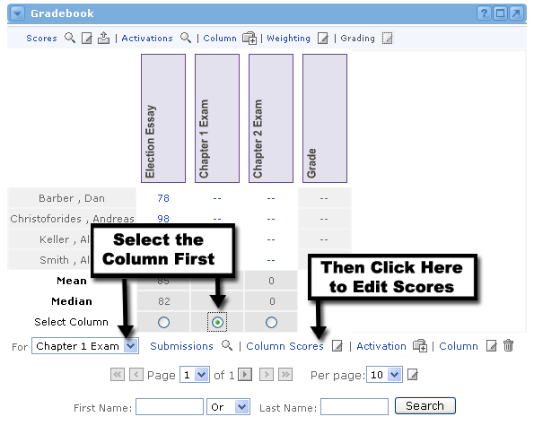

Editing Scores
After your enrolled users have submitted assignments and/or exams to you either online or through a traditional classroom setting, you'll want to record their scores. You can do that by editing the scores in the Gradebook channel.

- In the Gradebook channel's main view, locate the column for the scores that you would like to edit.
- Click the radio button beneath the column OR select the column from the drop-down menu at the bottom of the Gradebook channel. By selecting the column in either of these methods, the alternate method will automatically be selected as well.
- Once your column is selected, click the Column Scores link or the Edit icon next to it at the bottom of the Gradebook channel.
- You should now only see the column you have selected, with each user's scores in editable text boxes.
- Add or change the scores for any of the users that you deem necessary. You don't have to give each user a score at this time.
- When you are satisfied with the scores you have added or edited, click the Update button.
- You will now see the main Gradebook view, with updated scores for the column you selected.